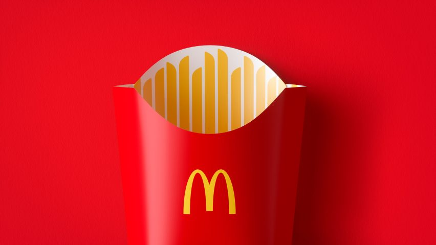

E X P E R I E N C E S
Well since it's a New Year, I will tell you guys about my own experience in 2022.
Work at Mcdonalds
On 1 September 2022, my friend and I decided to find a job during our semester break. We both decided to work at Mcdonalds since its near to our house. I have been a crew trainer for weeks before assigned to work in the kitchen. When I entered into this job, I knew absolutely nothing. I was completely inexperienced and unskilled worker but after working there, it helped me to improve my working skills such as how to communicate with people around me, never try to be hypocrite, stay calm and focus only on my work. It also taught me to value my own work, and what I put into something. As my mother said, this job also taught me how to handle my responsibilities by myself. I became responsible for some of my own expenses. I gained a lot of knowledge after working at Mcdonalds and it is so fun.